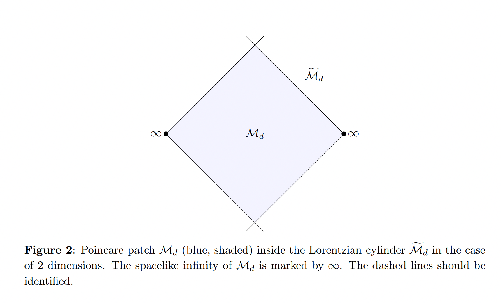
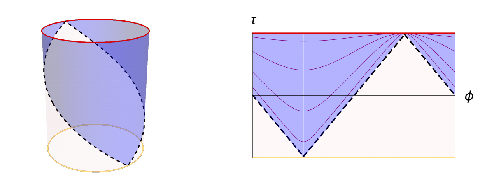

Introduction to cosmological bootstrap
This page is a recap of 2107.13871.
-
late-time correlation functions transform as conformal correlation functions under the isometry group \(SO(d + 1, 1)\) of \(dS_{d+1}\)
-
This suggests using conformal bootstrap methods to study QFT in dS.
-
Unitary conformal bootstrap:
- conformal block expansion (four identical operators):
\[\begin{equation}
\left\langle\mathcal{O}\left(x_1\right) \mathcal{O}\left(x_2\right) \mathcal{O}\left(x_3\right) \mathcal{O}\left(x_4\right)\right\rangle
=
\sum_{\Delta, \ell} C_{\Delta, \ell}^2 G_{\Delta, \ell}^{12,34}\left(x_1, x_2, x_3, x_4\right)
\end{equation}\]
-
\(\wave{SO}(d,2)\) AdS/Lorentzian unitarity: \(C_{\Delta, \ell}^2 \geq 0\)
-
crossing symmetry: invariance under permutations of the positions \(x_{i}\)
-
Idea of dS bootstrap:
-
Object: dS correlations functions in the late-time limit
-
existence of SOC and convergence of OPE are problematic, hence lack of conformal block expansion.
-
instead, consider the conformal partial wave expansion:
\[\begin{equation}
\left\langle\mathcal{O}\left(x_1\right) \mathcal{O}\left(x_2\right) \mathcal{O}\left(x_3\right) \mathcal{O}\left(x_4\right)\right\rangle
=
\sum_{\ell} \int d \nu I_{\ell}(\nu) \Psi_{\frac{d}{2}+i \nu, \ell}^{12,34}\left(x_1, x_2, x_3, x_4\right)
\end{equation}\]
-
\(SO(d+1,1)\) dS/Euclidean unitarity: \(I_{\ell}(\nu) \geq 0\)
-
crossing symmetry still holds: invariance under permutation due to operators commuting at spacelike separation.
dS Poincare patch
In the following we adopt the convention \(Q^{\dagger}=-Q\), \(R=1\).
Global dS is confomally equivalent to part of the Lorentzian cylinder, useful in the analysis of CFT on dS,
\[\begin{equation}
d s^2=\frac{1}{\cos ^2 \tau}\left(-d \tau^2+d \Omega_d^2\right), \quad-\pi / 2 \leq \tau \leq \pi / 2
\end{equation}\]
\(\R^{d,1}\)
\(\hookrightarrow\)
Lorentzian cylinder
\(\hookleftarrow\)
dS Poincare patch
Figure 2 of 1805.00098

Figure 1 of 2107.13871

The Poincare patch of dS is
\[\begin{equation}
d s^2=\frac{-d \eta^2+d x^\mu d x_\mu}{\eta^2}
\end{equation}\]
where $ η < 0,\, x\in\R^{d}$. The null surface at \(\eta=-\inf\) is the horizon of the Poincare patch, and \(\eta=0\) is the future infinity of dS.
The Killing vectors in the Poincare coordinates are,
\[\begin{equation}
\begin{gathered}
D: \eta \frac{\partial}{\partial \eta}+x^\mu \frac{\partial}{\partial x^\mu}, \quad P_\mu: \frac{\partial}{\partial x^\mu}, \\
K_\mu:\left(\eta^2-x^2\right) \frac{\partial}{\partial x^\mu}+2 x_\mu \eta \frac{\partial}{\partial \eta}+2 x_\mu x^\nu \frac{\partial}{\partial x^\nu}, \quad M_{\mu \nu}: x_\nu \frac{\partial}{\partial x^\mu}-x_\mu \frac{\partial}{\partial x^\nu} .
\end{gathered}
\end{equation}\]
In the late-time limit \(\eta=0\) they manifest the conformal symmetries of the future infinity.
Massive free scalar on dS
For simplicity we assume \(m^2>d^2/4\). The action is,
\[\begin{equation}
S=\int d^d x \int_{-\infty}^0 \frac{d \eta}{(-\eta)^{d+1}}\left[\eta^2\left(\frac{1}{2} \dot{\phi}^2-\frac{1}{2}(\nabla \phi)^2\right)-\frac{1}{2} m^2 \phi^2\right]
\end{equation}\]
By solving the EOM and imposing the CCR,
\[\begin{equation}
\left[\phi(\eta, x), \Pi\left(\eta, x^{\prime}\right)\right]=i \delta^{(d)}\left(x-x^{\prime}\right), \quad \Pi(\eta, x)=(-\eta)^{1-d} \dot{\phi}(\eta, x)
\end{equation}\]
the Fourier modes are
\[\begin{equation}
\phi(\eta, k)=f_k(\eta) a_k^{\dagger}+\bar{f}_k(\eta) a_{-k}
\end{equation}\]
and the creation/annihilation relation is
\[\begin{equation}
\left[a_k, a_{k^{\prime}}^{\dagger}\right]=(2 \pi)^d \delta^d\left(k-k^{\prime}\right)
\end{equation}\]
where \(f_k(\eta)\) is some hypergeometric function. The behaviour at late time is
\[\begin{equation}
\lim _{\eta \rightarrow 0} \phi(\eta,x)=\f^{+}(x) (-\eta)^{\Delta^{+}}+\f^{-}(x) (-\eta)^{\Delta^{-}}
\end{equation}\]
where the mass-"dimension" relation is \(\Delta(d-\Delta)=m^2\), c.f. in AdS/CFT the relation is \(\Delta(\Delta-d)=m^2\).
| mass |
dimension |
rep |
| \(m^2>d^2/4\) |
\(\Delta_{\pm}=\frac{d}{2}\pm i \nu \text { with } \nu \in \mathbb{R}\) |
principal series |
| \(0<m^2<d^2/4\) |
\(\D\in(0,d)\) |
complementary series |
| \(m=d/2\) |
\(\D=d/2\) |
exceptional series |
The principal series rep (PSR) is just the function space \(L^2(\R^{d})\) with suitable decay at \(x\to\inf\), and the action of the conformal group is exact the same as that of primary operators in unitary CFT.
The shadow transform is a Weyl reflection on the weight lattice, and gives the equivalence between \(\Delta_{\pm}\). At the end point, the complementary series rep can be reducible due to the shadow transform, and splits into exceptional series reps.
Since the theory is free, the Hilbert space is the Fock space building from the single-particle state, denoted as,
\[\begin{equation}
|\Delta, k\rangle:=a_k^{\dagger}|\Omega\rangle,
\end{equation}\]
with the local inner product,
\[\begin{equation}
\left\langle\Delta, k \vert \Delta, k^{\prime}\right\rangle=(2 \pi)^d \delta^d\left(k-k^{\prime}\right)
\end{equation}\]
where \(|\Omega\rangle\) is named as the Bunch-Davies vacuum.
The subspace of single-particle state should be an irrep of the isometry group \(SO(d+1,1)\). Under the assumption \(m^2>d^2/4\) it can be identified with the principal series rep (PSR). Then multi-particle states are in tensor products of PSRs, which can be further decomposed into direct integrals of PSRs.
Direct calculation shows,
\[\begin{equation}
\begin{aligned}
P_\mu|\Delta, k\rangle&=i k_\mu|\Delta, k\rangle\\
D|\Delta, k\rangle &=-\left(k \cdot \partial+\frac{d}{2}\right)|\Delta, k\rangle \\
K_\mu|\Delta, k\rangle &=i\left(k_\mu \partial^2-2(k \cdot \partial) \partial_\mu-d \partial_\mu+\left(\Delta-\frac{d}{2}\right)^2 \frac{k_\mu}{|k|^2}\right)|\Delta, k\rangle \\
M_{\mu \nu}|\Delta, k\rangle &=\left(k_\nu \partial_\mu-k_\mu \partial_\nu\right)|\Delta, k\rangle
\end{aligned}
\end{equation}\]
To manifest it's relation with PSR, choosing a new position basis by
\[\begin{equation}
|\Delta, x\rangle:=\int \frac{d^d k}{(2 \pi)^d} e^{i k \cdot x}|k|^{\Delta-d / 2}|\Delta, k\rangle
\end{equation}\]
in which the kernel can be fixed by the desired action on \(|\Delta, x\rangle\),
\[\begin{equation}
\begin{aligned}
P_\mu|\Delta, x\rangle &=\frac{\partial}{\partial x^\mu}|\Delta, x\rangle \\
D|\Delta, x\rangle &=(x \cdot \partial+\Delta)|\Delta, x\rangle \\
M_{\mu \nu}|\Delta, x\rangle &=\left(x_\nu \partial_\mu-x_\mu \partial_\nu\right)|\Delta, x\rangle \\
K_\mu|\Delta, x\rangle &=\left(2 x_\mu(x \cdot \partial)-x^2 \partial_\mu+2 \Delta x_\mu\right)|\Delta, x\rangle
\end{aligned}
\end{equation}\]
Aka, \(|\Delta, x\rangle\) transforms as an primary "operator" acting on the vacuum \(\op_{\D}(x)|\Omega\rangle\). But unlike the physical primary operators, the inner product is local
\[\begin{equation}
\left\langle\Delta, x \vert \Delta, x^{\prime}\right\rangle=\delta^{(d)}\left(x-x^{\prime}\right)
\end{equation}\]
Recall that in Wightman QFT, the Hilbert space is spanned by the state from the smeared operator,
\[\begin{equation}
\left|\Psi_f\right\rangle \equiv \int d^d x f(x) \mathcal{O}(x)|\Omega\rangle
\end{equation}\]
and the inner product is
\[\begin{equation}
\left\langle\Psi_{f} \mid \Psi_g\right\rangle=\int d^d x_1 d^d x_2 f^*\left(x_2\right) g\left(x_1\right)\left\langle\mathcal{O}\left(x_2\right) \mathcal{O}\left(x_1\right)\right\rangle_W
\end{equation}\]
After smeared by some normalizable wave function, the inner product of PSR is
\[\begin{equation}
\left\langle\Psi_{f} \mid \Psi_g\right\rangle=\int d^d x f^*\left(x\right) g\left(x\right)
\end{equation}\]
The conjugation relations are also different: for PSR is \(Q_{E}^{\dagger}=-Q_{E}\), for physical rep is \(Q_{L}^{\dagger}=-Q_{L}\) \(\to\) BPZ conjuagtion.
The correlation function is some hypergeometric function,
\[\begin{equation}
\left\langle\phi(\eta, x) \phi(\eta', x')\right\rangle:=G_{\mathrm{f}}(\xi ; \nu)=\frac{\mathrm{g}\left(\frac{d}{2}+i \nu\right) \psi_{\frac{d}{2}+i \nu}(\xi)+(\nu \to-\nu)}{2}
\end{equation}\]
where \(\xi=\frac{4 \eta \eta^{\prime}}{-\left(\eta-\eta^{\prime}\right)^2+\left|x-x^{\prime}\right|^2}\) is the two-point dS invariant,
\[\begin{equation}
\mathrm{g}(\Delta)=\frac{\Gamma\left(\frac{d}{2}-\Delta\right) \Gamma(\Delta)}{2^{2 \Delta+1} \pi^{d / 2+1}} \quad \text { and } \quad \psi_{\Delta}(\xi)=\xi^{\Delta}{ }_2 F_1\left(\begin{array}{c}
\Delta, \Delta-\frac{1}{2}(d-1) \\
2 \Delta-d+1
\end{array} \mid \xi\right)
\end{equation}\]
-
\(\xi>0\) coresspondes to spacelike separated, and the late-time limit \(\eta,\eta'\to 0\) correspondes to \(\xi\to 0^{+} \sim \left|x-x^{\prime}\right|^{-2}\), then
\[\begin{equation}
\psi_{\Delta}(\xi) \sim \xi^{\Delta} \sim \left|x-x^{\prime}\right|^{-2\Delta} \sim \vev{\op\op}_{\text{CFT}}
\end{equation}\]
-
Different \(i \e\) prescriptions corresponde to different types of time-ordering.
-
The shadow symmetry is manifested by \(\nu \to -\nu\).
Interacting QFTs on dS
If turning on some interaction, the correlation functions can be calculated via:
-
analytic continuation of correlation functions on the Euclidean sphere.
-
in-in formalism.
In this page we escape these calculations as our inputs.
Alternatively we can consider the non-perturbative properties of correlation functions.
Källén–Lehmann decomposition
KL decomposition is the integral transform of two-point functions with the kernel of the free two-point function.
From flat to the dS case, the complete basis of energy eigenstates are replaced by the PSR basis, and in result the integral is over the principal series,
\[\begin{equation}
\left\langle\Omega\left|\phi(\eta, x) \phi\left(\eta^{\prime}, x^{\prime}\right)\right| \Omega\right\rangle=\langle\phi\rangle^2+\sum_{\ell} \int \frac{d \Delta}{2 \pi i} \frac{1}{N(\Delta, \ell)} \int \frac{d^d k}{(2 \pi)^d}\langle\Omega|\phi(\eta, x)| \Delta, k\rangle_{\mu_1 \ldots \mu_{\ell}}^{\mu_1 \ldots \mu_{\ell}}\left\langle\Delta, k\left|\phi\left(\eta^{\prime}, x^{\prime}\right)\right| \Omega\right\rangle
\end{equation}\]
and it can be collected into
\[\begin{equation}
\left\langle\Omega\left|\phi(\eta, x) \phi\left(\eta^{\prime}, x^{\prime}\right)\right| \Omega\right\rangle=\langle\phi\rangle^2+\int_{\mathbb{R}} \frac{d \nu}{2 \pi} \rho_\phi\left(\frac{d}{2}+i \nu\right) G_{\mathrm{f}}(\xi ; \nu)
\end{equation}\]
where the spectral density \(\rho_\phi\left(\frac{d}{2}+i \nu\right)\) is a combination of matrix element of exchanged states and the Plancherel measure.
-
Unitarity implies the spectral density is a positive distribution.
-
Hermiticity of \(\f\) implies \(\rho_\phi(\Delta)^*=\rho_\phi\left(\Delta^*\right)\).
Boundary operators from the late-time expansion
-
for a UV-complete QFT defined as a relevant deformation of a UV CFT, the space of local operators is the one of the UV CFT.
-
for local CFTs the content of local operator should not depend on the background geometry.
-
for local CFTs on flat spacetime with boundaries, the local operators can be expanded as boundary local operators. After putting on dS spacetime,
\[\begin{equation}
\phi(\eta, x)=(-\eta)^{\Delta_\phi} \phi_{\text {flat }}(\eta, x),
\end{equation}\]
one can also define boundary operators by pushing bulk local operators to future infinity.
\[\begin{equation}
\begin{aligned}
\phi(\eta, x) &=\sum_k b_{\phi k}(-\eta)^{\Delta_k}\left[\mathcal{O}_k(x)+c_1 \eta^2 \partial_x^2 \mathcal{O}_k(x)+c_2 \eta^4\left(\partial_x^2\right)^2 \mathcal{O}_k(x)+\ldots\right] \\
&=\sum_k b_{\phi k}(-\eta)^{\Delta_k}{ }_0 F_1\left(\Delta_k-\frac{d}{2}+1, \frac{1}{4} \eta^2 \partial_x^2\right) \mathcal{O}_k(x)
\end{aligned}
\end{equation}\]
in which \(\mathcal{O}_k(x)\)'s are primary "operators", and the contributions from descendants can be fixed by the dS isometry
-
The one-point coefficients \(b_{\phi k}\) stores the dynamical informations. This can be compared with the HKLL reconstruction in AdS/CFT.
Now we can compare the late-time expansion and the KL decomposition. Using the shadow symmetry of the free two-point function, the KL decomposition can be written as
\[\begin{equation}
\left\langle\Omega\left|\phi(\eta, x) \phi\left(\eta^{\prime}, x^{\prime}\right)\right| \Omega\right\rangle=\langle\phi\rangle^2+\int_{\frac{d}{2}-i \infty}^{\frac{d}{2}+i \infty} \frac{d \Delta}{2 \pi i} \rho_\phi(\Delta) g(\Delta) \psi_{\Delta}(\xi)
\end{equation}\]
then we want to closen the contour from the principal series to the right infinity, picking up the contributions from poles.
Requirements on the spectral density:
-
\(g(\Delta)\) has simple poles at \(\Delta=\frac{d}{2}+\mathbb{N}\), we assume
\[\begin{equation}
\rho_\phi\left(\frac{d}{2}+n\right)=0 \quad \text { for all } \quad n=0,1,2, \ldots
\end{equation}\]
to cancel these non-physical poles due to the following reasons:
-
in all known examples \(\rho_\phi\left(\frac{d}{2}+i \nu\right) \sim 1/\Gamma\left(\frac{d}{2}-\Delta\right)\)
-
\(\rho_\phi\left(\frac{d}{2}+i \nu\right)\) contains the information of the Plancherel measure, which cancels the poles in \(g(\Delta)\).
-
\(\rho_\phi\left(\frac{d}{2}+i \nu\right)\) can be analytically continued to the right with suitable decay, and the simple poles are denoted as
\[\begin{equation}
\rho_\phi(\Delta) \underset{\Delta \rightarrow \Delta_*}{\sim} \frac{\operatorname{Res} \rho_\phi\left(\Delta_*\right)}{\Delta-\Delta_*}, \quad \operatorname{Re}\left(\Delta_*\right)>d / 2 .
\end{equation}\]
Now closing the contour and get
\[\begin{equation}
\left\langle\Omega\left|\phi(\eta, x) \phi\left(\eta, x^{\prime}\right)\right| \Omega\right\rangle \underset{\eta \rightarrow 0^{-}}{\sim}\left\langle\phi^2\right\rangle-\sum_{\Delta_*} \operatorname{Res} \rho_\phi\left(\Delta_*\right) \mathrm{g}\left(\Delta_*\right)\left(\frac{-2 \eta}{\left|x-x^{\prime}\right|}\right)^{2 \Delta_*}+\ldots
\end{equation}\]
comparing with the late-time expansion
\[\begin{equation}
\left\langle\Omega\left|\phi(\eta, x) \phi\left(\eta, x^{\prime}\right)\right| \Omega\right\rangle \underset{\eta \rightarrow 0^{-}}{\sim}\left\langle\phi^2\right\rangle+\sum_k\left(b_{\phi k}\right)^2\left(\frac{-\eta}{\left|x-x^{\prime}\right|}\right)^{2 \Delta_k}+\ldots
\end{equation}\]
we get the relation between one-point coefficients and the spectral density,
\[\begin{equation}
\left(b_{\phi k}\right)^2=-4^{\Delta_k} \mathrm{~g}\left(\Delta_k\right) \operatorname{Res} \rho_\phi\left(\Delta_k\right)
\end{equation}\]
Examples
Free massive scalar
For the free two-point itself, the spectral density is
\[\begin{equation}
\frac{1}{2 \pi} \rho_{\mathrm{f}}\left(\frac{d}{2}+i \nu\right)=\frac{\delta(\mu+\nu)+\delta(\mu-\nu)}{2}
\end{equation}\]
and there is only one pair of "opeartors" \(\op\) and $ \op^{\dagger}$ in the late-time expansion. And the boundary correlation functions form a MFT with fundamental operator \(\op\) and $ \op^{\dagger}$.
For the composite operator \(\f^2\), the two-point function is
\[\begin{equation}
\left\langle\phi^2(\eta, x) \phi^2\left(\eta^{\prime}, x^{\prime}\right)\right\rangle=2 G_f(\xi ; \mu)^2
\end{equation}\]
The spectral density
\[\begin{equation}
\rho_{\phi^2}(\Delta)=\frac{\nu \sinh (\pi \nu)}{2^6 \pi^{\frac{d}{2}+3} \Gamma\left(\frac{d}{2}\right)} \frac{\Gamma^2\left(\frac{\Delta}{2}\right) \Gamma^2\left(\frac{d-\Delta}{2}\right)}{\Gamma(\Delta) \Gamma(d-\Delta)} \Gamma\left(\frac{2 \Delta_\phi+\Delta-d}{2}\right) \Gamma\left(\frac{2 \Delta_\phi-\Delta}{2}\right) \Gamma\left(\frac{d-2 \Delta_\phi+\Delta}{2}\right) \Gamma\left(\frac{2 d-2 \Delta_\phi-\Delta}{2}\right)
\end{equation}\]
contains three types of simple poles
\[\begin{equation}
\Delta=2 \Delta_\phi+2 \mathbb{N}, \quad \Delta=2\left(d-\Delta_\phi\right)+2 \mathbb{N} \quad \text { and } \quad \Delta=d+2 \mathbb{N}
\end{equation}\]
corresponding to
\[\begin{equation}
\mathcal{O} \square^n \mathcal{O}, \quad \mathcal{O}^{\dagger} \square^n \mathcal{O}^{\dagger} \quad \text { and } \quad \mathcal{O}^{\dagger} \square^n \mathcal{O}+\mathcal{O} \square^n \mathcal{O}^{\dagger}
\end{equation}\]
which justifies the structure of MFT.
CFT on dS
The two-point function of \(\f_{\d},\, \d \geq (d − 1)/2\) in CFT on dS is
\[\begin{equation}
G_\delta(\xi)=\frac{1}{2^\delta} \xi^\delta
\end{equation}\]
The spectral density
\[\begin{equation}
\rho_\delta(\Delta)=\frac{2^{d+2-\delta} \pi^{(d+1) / 2}}{\Gamma(\delta) \Gamma\left(\delta-\frac{d}{2}+\frac{1}{2}\right)} \nu \sinh (\pi \nu) \Gamma(\delta-\Delta) \Gamma(\delta-d+\Delta)
\end{equation}\]
contains poles at
\[\begin{equation}
\Delta=\delta+\mathbb{N}
\end{equation}\]
The symmetry of CFT on dS is enhanced to \(\wave{SO}(d+1,2)\). The late-time expansion can be derived by expanding \(\f_{\d}(\eta,x)\) on the slice \(\eta=0\), and the summation counts the order of \(\eta\)-derivatives of \(\f_{\d}(\eta,x)\), and the primaries on constant \(\eta\) form a series \(\Delta=\delta+\mathbb{N}\).
This corresponds to decompose the rep of \(\wave{SO}(d+1,2)\) into \(SO(d+1,1)\).
Higher-point functions
From the late-time expansion we get a set of boundary operators, transforming as the primary operators in CFT, and the correlation functions of this set can define a CFT on the future infinity. This CFT lacks features of flat-space CFT, e.g. the existence of SOC and the convergence of OPE, and there is no local stress-energy tensor in the operator spectrum.
To test the proterties of this fictitious CFT, we can extract the dynamical informations from the four-point functions.
Recall the conformal partial wave expansion is
\[\begin{equation}
\left\langle\mathcal{O}_1 \mathcal{O}_2 \mathcal{O}_3 \mathcal{O}_4\right\rangle=\sum_{\ell} \int_{\frac{d}{2}}^{\frac{d}{2}+i \infty} \frac{d \Delta}{2 \pi i} I_{\Delta, \ell} \Psi_{\Delta, \ell}^{\Delta_i}\left(x_i\right)+\left\langle\mathcal{O}_1 \mathcal{O}_2\right\rangle\left\langle\mathcal{O}_3 \mathcal{O}_4\right\rangle
\end{equation}\]
where \(\Psi_{\Delta, \ell}^{\Delta_i}\left(x_i\right)\) is the conformal partial wave,
\[\begin{equation}
\Psi_{\Delta, \ell}^{\Delta i}\left(x_i\right):=\int d^d x\left\langle\mathcal{O}_1\left(x_1\right) \mathcal{O}_2\left(x_2\right) \mathcal{O}_{\mu_1 \ldots \mu_{\ell}}(x)\right\rangle\left\langle\tilde{\mathcal{O}}^{\mu_1 \ldots \mu_{\ell}}(x) \mathcal{O}_3\left(x_3\right) \mathcal{O}_4\left(x_4\right)\right\rangle
\end{equation}\]
which is orthogonal and complete,
\[\begin{equation}
\int \frac{d^d x_1 \ldots d^d x_4}{\operatorname{vol}(\operatorname{SO}(d+1,1))} \Psi_{\Delta, \ell}^{\Delta_i}\left(x_i\right) \Psi_{\tilde{\Delta}^{\prime}, \ell^{\prime}}^{\tilde{\Delta}_i}\left(x_i\right)=2 \pi n_{\Delta, \ell} \delta_{\ell, \ell^{\prime}} \delta\left(\nu-\nu^{\prime}\right)
\end{equation}\]
Due to the fact that the operators always come in pair (from the unitarity in the dS bulk), the inversion function satisfies certain positivity condition,
\[\begin{equation}
I_{\Delta, \ell} \geq 0 \quad \text { if }: \quad \mathcal{O}_1=\mathcal{O}_3^{\dagger} \quad \text { and } \quad \mathcal{O}_2=\mathcal{O}_4^{\dagger}
\end{equation}\]
\[\begin{equation}
\bar{I}_{\Delta, \ell} \equiv I_{\Delta, \ell}(-1)^{\ell} \geq 0 \quad \text { if }: \quad \mathcal{O}_1=\mathcal{O}_4^{\dagger} \quad \text { and } \quad \mathcal{O}_2=\mathcal{O}_3^{\dagger}
\end{equation}\]
MFT
The inversion function of four-point function is
\[\begin{equation}
\begin{aligned}
\left\langle\mathcal{O}_1 \mathcal{O}_2^{\dagger} \mathcal{O}_3^{\dagger} \mathcal{O}_4\right\rangle_{\mathrm{MFT}} &=\left\langle\mathcal{O}_1 \mathcal{O}_2^{\dagger}\right\rangle\left\langle\mathcal{O}_3^{\dagger} \mathcal{O}_4\right\rangle+\left\langle\mathcal{O}_1 \mathcal{O}_4\right\rangle\left\langle\mathcal{O}_2^{\dagger} \mathcal{O}_3^{\dagger}\right\rangle+\left\langle\mathcal{O}_1 \mathcal{O}_3^{\dagger}\right\rangle\left\langle\mathcal{O}_2^{\dagger} \mathcal{O}_4\right\rangle \\
&=\left\langle\mathcal{O}_1 \mathcal{O}_2^{\dagger}\right\rangle\left\langle\mathcal{O}_3^{\dagger} \mathcal{O}_4\right\rangle+\sum_{\ell} \int_{\frac{d}{2}}^{\frac{d}{2}+i \infty} \frac{d \Delta}{2 \pi i} I_{\Delta, \ell}^{\mathrm{MFT}} \Psi_{\Delta, \ell}^{\Delta_i}\left(x_i\right)+\sum_{\ell} \int_{\frac{d}{2}}^{\frac{d}{2}+i \infty} \frac{d \Delta}{2 \pi i} I_{\Delta, \ell}^\delta \Psi_{\Delta, \ell}^{\Delta_i}\left(x_i\right)
\end{aligned}
\end{equation}\]
The contribution of the second term is
\[\begin{equation}
I_{\Delta, \ell}^{\mathrm{MFT}}=(-1)^{\ell} \frac{2^{\ell-1} \Gamma\left(\ell+\frac{d}{2}\right)}{\pi^{\frac{d}{2}} \Gamma(\ell+1)} \frac{\Gamma(i \mu) \Gamma(-i \mu)}{\Gamma\left(\frac{d}{2}+i \mu\right) \Gamma\left(\frac{d}{2}-i \mu\right)} \frac{\Gamma(\Delta-1) \Gamma(d-\Delta-1) \Gamma(\Delta+\ell) \Gamma(d-\Delta+\ell)}{\Gamma\left(\Delta-\frac{d}{2}\right) \Gamma\left(-\Delta+\frac{d}{2}\right) \Gamma(\Delta+\ell-1) \Gamma(d-\Delta+\ell-1)} .
\end{equation}\]
which violates the positivity condition at odd spins.
Local terms
A more careful calculation gives
\[\begin{equation}
\langle\phi(\eta, x) \phi(\eta, y)\rangle \underset{\eta \rightarrow 0^{-}}{\sim}(-\eta)^{d+2 i \mu} \frac{\Gamma(-i \mu) \Gamma\left(\frac{d}{2}+i \mu\right)}{4 \pi^{\frac{d}{2}+1}} \frac{1}{|x-y|^{d+2 i \mu}}+\text { c.c. }+(-\eta)^d \frac{\operatorname{coth}(\pi \mu)}{2 \mu} \delta^d(x-y) .
\end{equation}\]
This can be understood from the late-time behaviour of \(\f\)
\[\begin{equation}
\phi(x, \eta) \underset{\eta \rightarrow 0^{-}}{\sim} b(-\eta)^{\Delta} \mathcal{O}(x)+b^*(-\eta)^{\Delta^*} \mathcal{O}(x)^{\dagger}, \quad \Delta=\frac{d}{2}+i \mu
\end{equation}\]
then
\[\begin{equation}
\langle\phi(x, \eta) \phi(y, \eta)\rangle \underset{\eta \rightarrow 0^{-}}{\sim}(-\eta)^{2 \Delta} b^2\langle\mathcal{O}(x) \mathcal{O}(y)\rangle+(-\eta)^{2 \Delta^*} b^{* 2}\left\langle\mathcal{O}^{\dagger}(x) \mathcal{O}^{\dagger}(y)\right\rangle+2(-\eta)^d|b|^2\left\langle\mathcal{O}(x) \mathcal{O}^{\dagger}(y)\right\rangle
\end{equation}\]
Aka,
\[\begin{equation}
\left\langle\mathcal{O}(x) \mathcal{O}^{\dagger}(y)\right\rangle= C \delta^d(x-y)
\end{equation}\]
Due to this non-vanishing two-point function, the third term in the four-point functions gives nontrivial contributions, and the result is
\[\begin{equation}
I_{\Delta, \ell}=I_{\Delta, \ell}^{\mathrm{MFT}}+I_{\Delta, \ell}^\delta=\left(1+(-1)^{\ell} \frac{1}{\cosh ^2(\pi \mu)}\right) I_{\Delta, \ell}^\delta .
\end{equation}\]
where \(I_{\Delta, \ell}^\delta\sim C^2\) is manifestly positive.